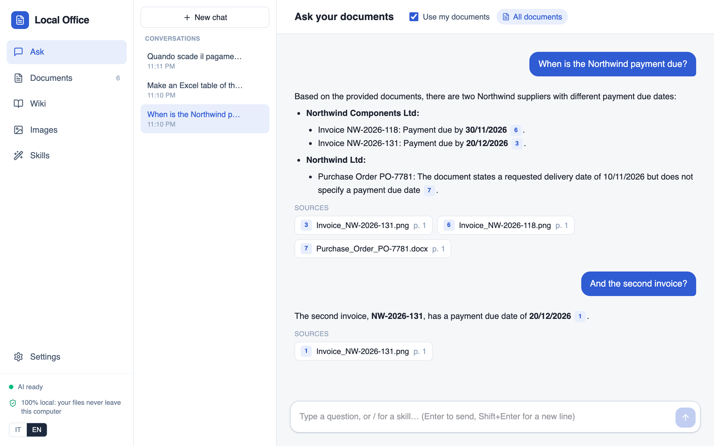
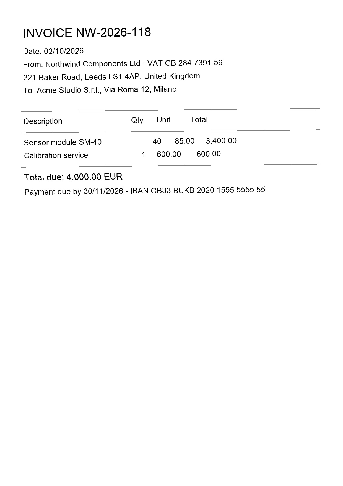
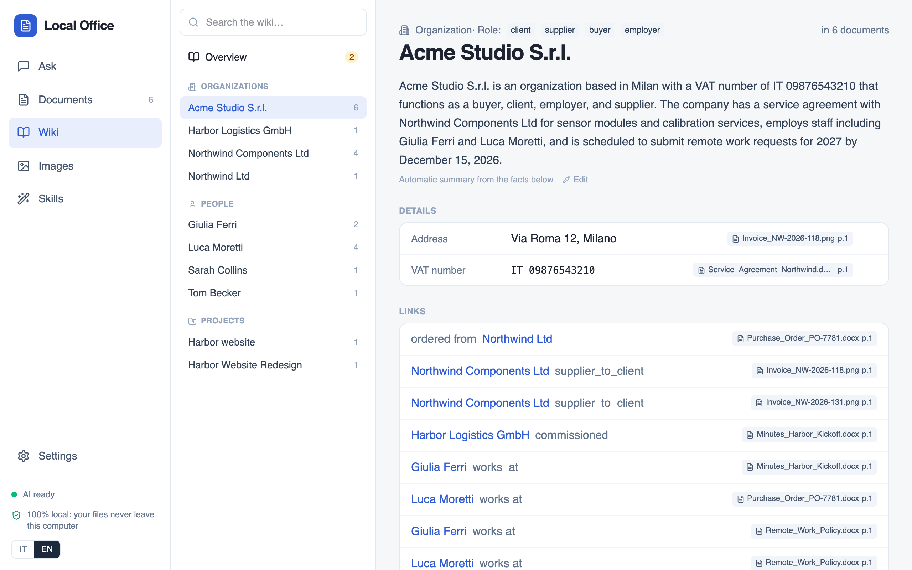
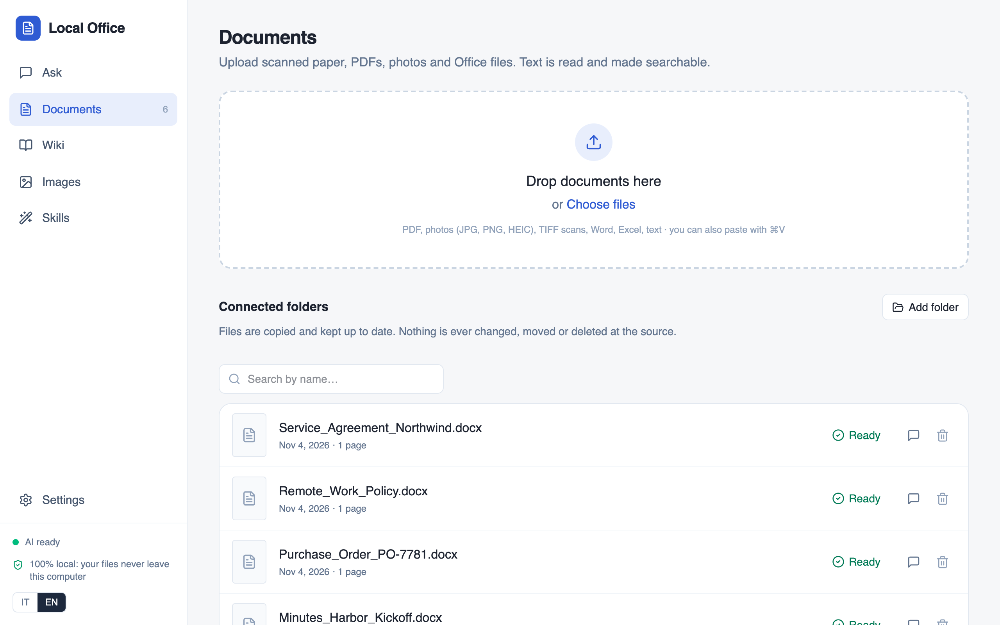
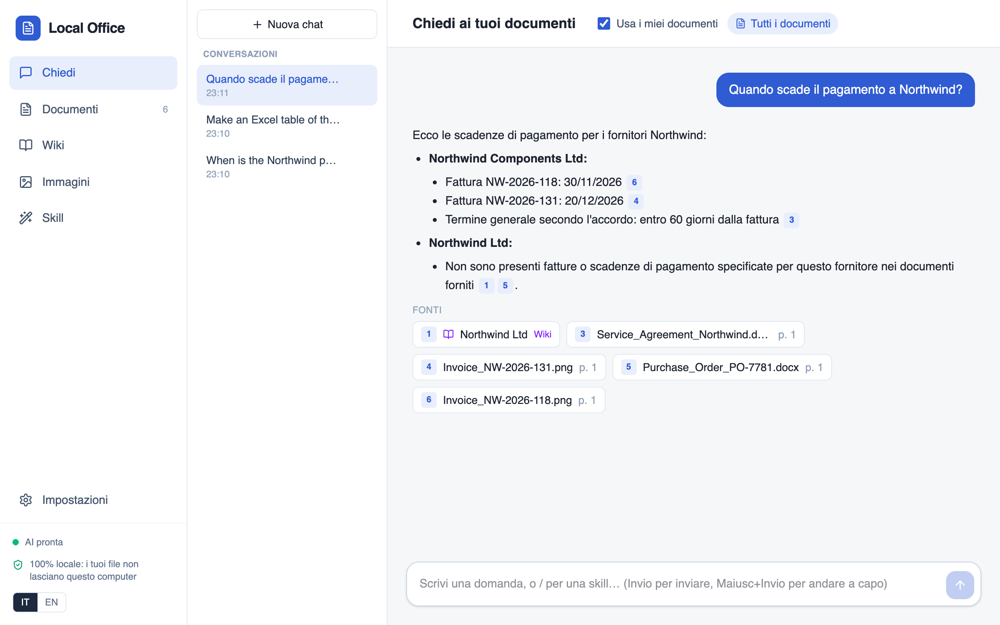
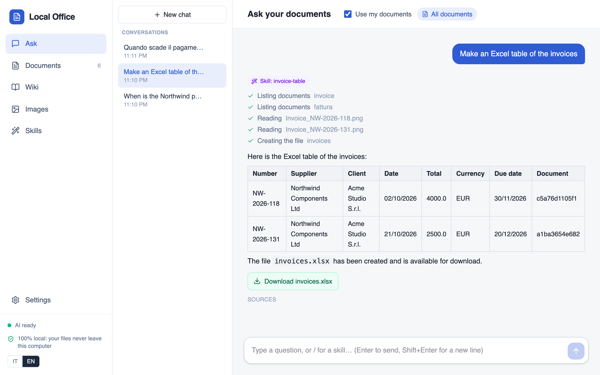
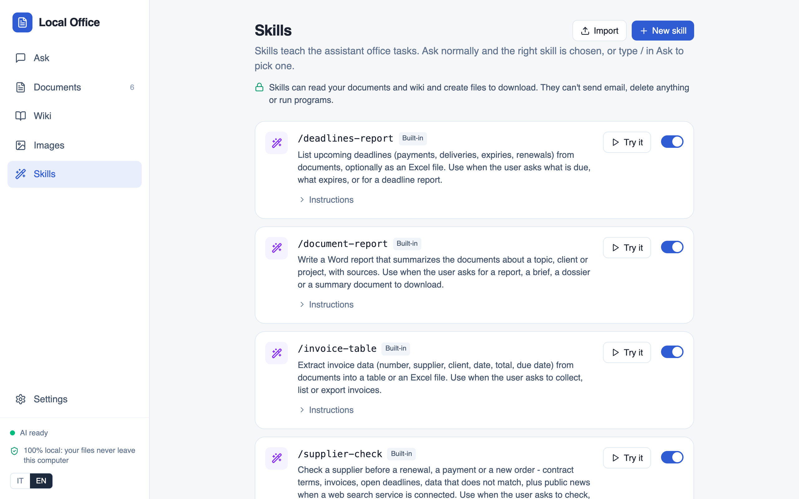
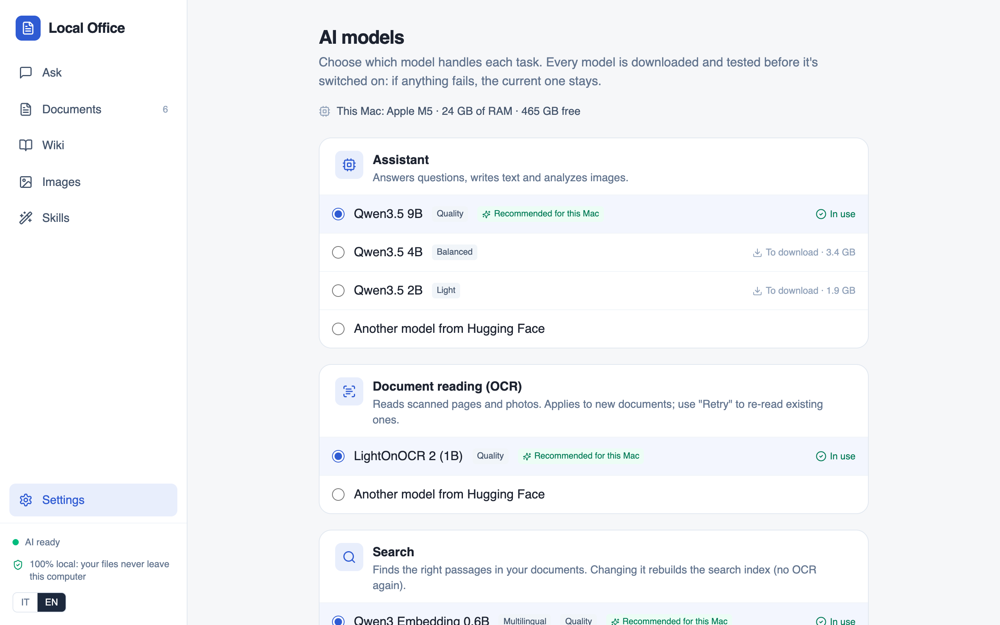

Private AI for office paperwork
Ask your scans, PDFs and Office files in plain words. Every answer cites its page, and the AI runs on your own computer.


No file leaves your computer

Free and open source, MIT licence.
For Mac, Windows and Linux. Works offline after a one-time model download.

Ask your scans, PDFs and Office files in plain words. Every answer cites its page, and the AI runs on your own computer.
In the demo run below, the contract with Northwind Components Ltd gives the VAT number GB 284 7391 56. The purchase order for the same supplier says GB 284 7391 65. Local Office read both files side by side, put the two numbers next to each other and said not to renew until someone checked.
VAT on the contract, GB 284 7391
56VAT on the purchase order, GB 284 7391
65A small studio's files on one supplier: a service agreement, two scanned invoices, a purchase order and meeting minutes. With them loaded, one question.
Recorded on an Apple M5 Mac with Qwen3.5 9B. The 83-second run is sped up 12 times.
“Check Northwind before we renew the contract”
Check first, don't renew yet: the purchase order has a different VAT number than the contract.
15/01/2026 to 31/12/2026. Renews automatically unless cancelled in writing by 30/11/2026. Invoices due in 60 days.
NW-2026-118 €4,000 due 30/11. NW-2026-131 €2,500 due 20/12. PO-7781 €1,700 open.
VAT GB 284 7391 56 on the contract against 65 on the order, and “Northwind Components Ltd” against “Northwind Ltd”.
None for this company. The web hits were about a different “North Wind”, so they are left out.
The facts come from files that stay on the computer. The only thing sent outside was one optional web search for the company's name, with no amounts and no people.





PDFs, scans, phone photos (JPG, PNG, HEIC), TIFF, Word, Excel, PowerPoint and text. Digital PDFs use their text layer; scans and photos are read with OCR on the computer, and tables are kept. Connected folders stay in sync and are only ever read.
Ask in plain words, in English or Italian. Each claim carries a numbered citation; open it and the source page appears. Conversations are saved and can be reopened.
Skills are folders with a SKILL.md that teach the assistant an office task: deadline reports, invoice tables, Word reports, supplier checks. Ask normally and the right one is picked. They write Word, Excel or Markdown files, and never send email, delete anything or run scripts.
Pages for organisations, people and projects, built from your documents. Names, identifiers and dates are checked against the source text, and every fact links to its page. Conflicting values and likely duplicates wait for your review. Exports to Obsidian.
The app picks models for the machine's memory and graphics card. Swap any of them in Settings, including any GGUF model from Hugging Face. Each is downloaded, started and tested before it takes over.
Opt-in only. Connected services (MCP servers for mail, calendar, CRM or web search) are the one feature that sends data off the computer. You add them in Settings; only tools a server marks read-only start switched on.
A native window. A React interface in the system's web view: WebKit on Mac and Linux, WebView2 on Windows. No browser tab, no account, no subscription.
A local backend. Reading, OCR, hybrid search (vectors and keywords), the wiki and skills, on a private localhost port. Files and the index live in one SQLite database on your disk.
Local models. One llama.cpp server per role, started on first use and stopped when idle. Metal on a Mac, CUDA on an NVIDIA card, the CPU otherwise.
| Role | 24 GB memory or more | 16 GB memory |
|---|---|---|
| Answers, chat, images, skills | Qwen3.5 9B | Qwen3.5 4B |
| OCR of scanned pages | LightOnOCR-2 1B | LightOnOCR-2 1B |
| Search index | Qwen3-Embedding 0.6B | Qwen3-Embedding 0.6B |
Every version and its release notes are on GitHub Releases. Snapdragon X Elite laptops (ARM64 with NPU) have a separate setup.
Free and open source. On first launch it downloads the models chosen for your computer, once.
| System | Needs | |
|---|---|---|
| macOSLocalOffice.dmg |
Open the .dmg and drag Local Office into Applications. If macOS warns on first open: System Settings, Privacy & Security, Open Anyway. |
Download .dmg |
| WindowsLocalOffice-Setup.exe |
The installer isn't code-signed yet. If SmartScreen appears: More info, then Run anyway. |
Download .exe |
| Linuxlocal-office_amd64.deb |
CPU only: this package does not use your graphics card, even an NVIDIA one, so answers are noticeably slower. For CUDA, build from source. Install with |
Download .deb |
Does any of my data leave the computer? No. Documents, the database, the wiki and the models all stay on your machine. The one exception is connected services (MCP), which you switch on yourself in Settings and which show exactly which tools they can use.
Do I need an internet connection? Only once, to download the models on first launch (5 to 8.5 GB depending on the computer). After that Local Office works fully offline.
How accurate are the answers? Local models are small and can make mistakes. That is why every answer cites the page it comes from, and every wiki fact links to its source and can be rejected or edited.
Where are my files stored? On a Mac in ~/Library/Application Support/Local Office/, on Windows in %LOCALAPPDATA%\Local Office\, on Linux in ~/.local/share/local-office/. Connected folders are only read, never changed.
Which languages does it speak? The interface is in English and Italian. Documents can be in any language the models read, and you can ask in either.
Does the Linux package use my GPU? No. The .deb runs the models on the CPU only, so it works on any x64 machine but answers more slowly. To use an NVIDIA card, build Local Office from source: the build detects CUDA and compiles GPU support for it.
Can I use a different model? Yes. Any role can be switched in Settings, including any GGUF model from Hugging Face. A switch downloads, starts and tests the new model, and the current one stays if any step fails.
Can I teach it my own tasks? Yes. Write a skill in the app, or import a SKILL.md or a .zip in the Agent Skills format. Skills can read documents and the wiki and create files, nothing more.
How much does it cost? Nothing. Local Office is MIT-licensed. The models keep their own licences: Qwen3.5, Qwen3-Embedding and LightOnOCR-2 are Apache 2.0.
Download it, drop in a folder of scans and contracts, and ask your first question in a few minutes.
Download Local Office